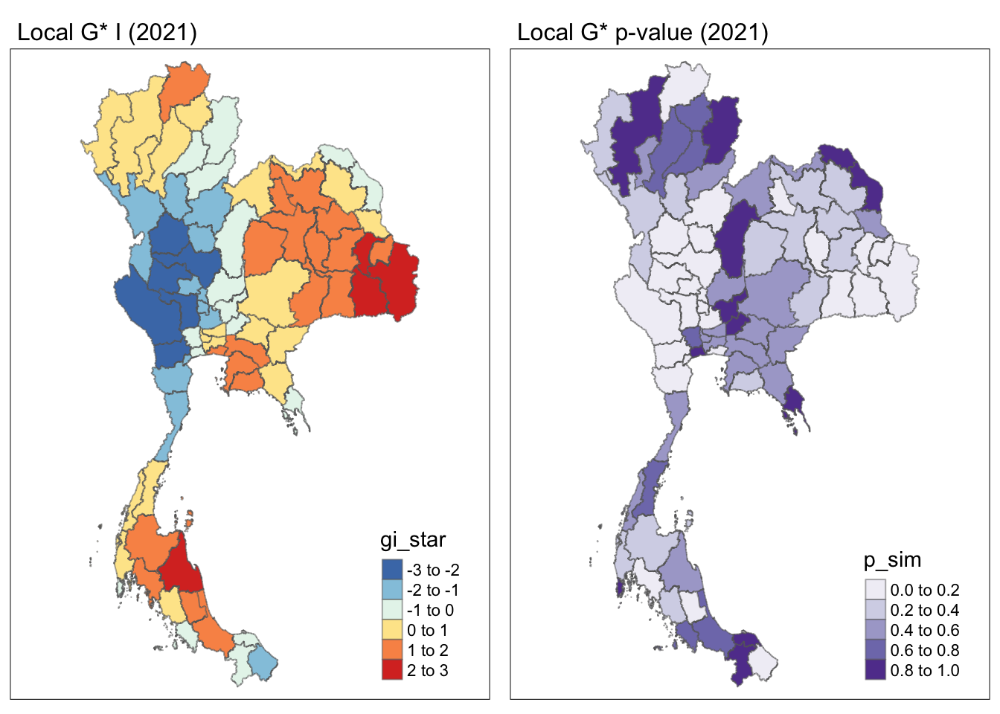
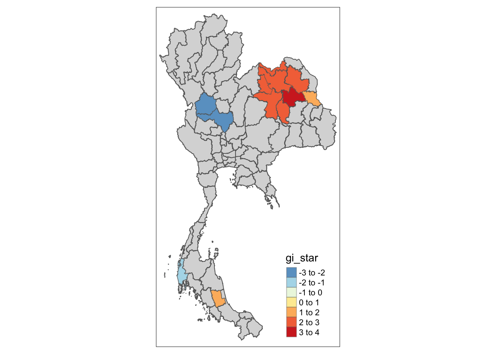

pacman::p_load(sf, sfdep, tmap, tidyverse, ggplot2, gridExtra, kendall)Take-home Exercise 2
Take-home
In this exercise, we will be analyzing drug use offence in Thailand from 2017 - 2022, using spatial autocorrelation techniques to identify clusters, outliers and hotspots of such offence. We’ll also create maps to visualize the results and interpret the spatial patterns.
1. Introduction
1.1 Context
Drug abuse is a significant global health issue with far-reaching consequences, including negative health outcomes, financial burdens, and social problems. Despite efforts to combat it, illicit drug consumption remains prevalent and continues to grow. In 2021, an estimated 296 million people aged 15–64 worldwide had used a drug in the past 12 months.
Thailand, situated near the Golden Triangle - the largest drug production site in Asia - has become a market and transit route for drug trafficking due to its geographic location and infrastructure development. This has made drug abuse a major social issue within the country.
Youth are particularly vulnerable to drug abuse, with approximately 2.7 million Thai youths using drugs. Among 15-19-year-olds, around 300,000 require drug treatment. Vocational-school students are disproportionately affected, with nearly double the number of drug users compared to secondary-school students.
1.2 Objectives
- Determine if drug abuse indicator are spatially dependent
- Identify clusters, outliers and hotspots of drug abuse
- Identify emerging hot and cold spots
2. Setup
2.1 Loading Packages
In this project we will be using the following packages:
tmap: A package for creating thematic maps in R. It provides a simple and flexible interface for customizing maps and exporting them in various formats.sf: A package for simple feature data, which is a modern standard for representing geographic features. It provides efficient data structures and functions for spatial operations.sfdep: A package specifically designed for spatial dependence analysis. It provides functions for calculating spatial weights matrices, conducting global and local spatial autocorrelation tests (e.g., Moran’s I, Geary’s C), and performing spatial regression analysis.tidyverse: A collection of R packages designed for data manipulation, visualization, and analysis. It includes packages like dplyr, ggplot2, and tidyr, which are commonly used in data science workflows.kendall: A package used for performing Kendall’s rank correlation test. This test is often used to assess the degree of association between two variables when the data is ordinal or continuous but not normally distributed.
2.2 Loading Data
This dataset presents statistics related to different types of drug offenses in Thailand, categorized by fiscal year. The data provides insights into the prevalence of various drug-related cases and their distribution across different provinces.
off_sf <- read_csv("data/aspatial/thai_drug_offenses_2017_2022.csv")Here we will be loading Thailand’s administrative 1 (province) boundaries, in accordance with the drug offense dataset.
prov_sf <- st_read(dsn = "data/geospatial/tha_adm_rtsd_itos_20210121_shp", layer = "tha_admbnda_adm1_rtsd_20220121") %>%
st_transform(crs = 24047)Reading layer `tha_admbnda_adm1_rtsd_20220121' from data source
`/Users/jeffery/Projects/Y4S1/IS415/IS415-GAA/take-home_ex/ex02/data/geospatial/tha_adm_rtsd_itos_20210121_shp'
using driver `ESRI Shapefile'
Simple feature collection with 77 features and 16 fields
Geometry type: MULTIPOLYGON
Dimension: XY
Bounding box: xmin: 97.34336 ymin: 5.613038 xmax: 105.637 ymax: 20.46507
Geodetic CRS: WGS 843. Data Wrangling
In this section we will be wrangling our data and joining the drug offences dataframe with the provinces sf dataframe.
3.1 Examining Data
Before performing the join we need to identify if the column we are joining is clear for joining (ie. share the same spelling).
prov_diff <- function(off_sf_provinces, prov_sf_provinces) {
# Check if all provinces from off_sf are in prov_sf
all_off_sf_in_prov_sf <- all(off_sf_provinces %in% prov_sf_provinces)
# Check if all provinces from prov_sf are in off_sf
all_prov_sf_in_off_sf <- all(prov_sf_provinces %in% off_sf_provinces)
# Check if the sets are equal
sets_are_equal <- all_off_sf_in_prov_sf && all_prov_sf_in_off_sf
if (sets_are_equal) {
cat("All province names match.\n")
} else {
cat("There are mismatches in province names.\n")
# Find the differences
cat("Missing in prov_sf:", paste(setdiff(off_sf_provinces, prov_sf_provinces), collapse = ", "), "\n")
cat("Missing in off_sf:", paste(setdiff(prov_sf_provinces, off_sf_provinces), collapse = ", "), "\n")
}
}
prov_diff(unique(off_sf$province_en), unique(prov_sf$ADM1_EN))There are mismatches in province names.
Missing in prov_sf: Loburi, buogkan
Missing in off_sf: Lop Buri, Bueng Kan
Provinces to Update
Notice in the above when we compare the unique set from both SF there is 2 misspellings, where we will be renaming the province in off_sf:
- Loburi -> Lop Buri
- Buogkan -> Bueng Kan
3.2 Updaing Mixmatched Province
We will perform the suggested naming and check if the provinces matches.
off_sf <- off_sf %>%
mutate(province_en = case_when(
province_en == "Loburi" ~ "Lop Buri",
TRUE ~ province_en
))
off_sf <- off_sf %>%
mutate(province_en = case_when(
province_en == "buogkan" ~ "Bueng Kan",
TRUE ~ province_en
))
prov_diff(unique(off_sf$province_en), unique(prov_sf$ADM1_EN))All province names match.3.3 Joining sf on Province
Now we can join the province and drug offense dataframe, left join on province since it is the sf df.
du_sf <- left_join(prov_sf, off_sf, by = c("ADM1_EN" = "province_en"))
head(du_sf)Simple feature collection with 6 features and 20 fields
Geometry type: MULTIPOLYGON
Dimension: XY
Bounding box: xmin: 644049.1 ymin: 1491784 xmax: 710059.2 ymax: 1543010
Projected CRS: Indian 1975 / UTM zone 47N
Shape_Leng Shape_Area ADM1_EN ADM1_TH ADM1_PCODE ADM1_REF ADM1ALT1EN
1 2.417227 0.1313387 Bangkok กรุงเทพมหานคร TH10 <NA> <NA>
2 2.417227 0.1313387 Bangkok กรุงเทพมหานคร TH10 <NA> <NA>
3 2.417227 0.1313387 Bangkok กรุงเทพมหานคร TH10 <NA> <NA>
4 2.417227 0.1313387 Bangkok กรุงเทพมหานคร TH10 <NA> <NA>
5 2.417227 0.1313387 Bangkok กรุงเทพมหานคร TH10 <NA> <NA>
6 2.417227 0.1313387 Bangkok กรุงเทพมหานคร TH10 <NA> <NA>
ADM1ALT2EN ADM1ALT1TH ADM1ALT2TH ADM0_EN ADM0_TH ADM0_PCODE date
1 <NA> <NA> <NA> Thailand ประเทศไทย TH 2019-02-18
2 <NA> <NA> <NA> Thailand ประเทศไทย TH 2019-02-18
3 <NA> <NA> <NA> Thailand ประเทศไทย TH 2019-02-18
4 <NA> <NA> <NA> Thailand ประเทศไทย TH 2019-02-18
5 <NA> <NA> <NA> Thailand ประเทศไทย TH 2019-02-18
6 <NA> <NA> <NA> Thailand ประเทศไทย TH 2019-02-18
validOn validTo fiscal_year types_of_drug_offenses no_cases province_th
1 2022-01-22 <NA> 2017 drug_use_cases 11871 กรุงเทพมหานคร
2 2022-01-22 <NA> 2018 drug_use_cases 16480 กรุงเทพมหานคร
3 2022-01-22 <NA> 2019 drug_use_cases 15067 กรุงเทพมหานคร
4 2022-01-22 <NA> 2020 drug_use_cases 9724 กรุงเทพมหานคร
5 2022-01-22 <NA> 2021 drug_use_cases 9625 กรุงเทพมหานคร
6 2022-01-22 <NA> 2022 drug_use_cases 2755 กรุงเทพมหานคร
geometry
1 MULTIPOLYGON (((674854.6 15...
2 MULTIPOLYGON (((674854.6 15...
3 MULTIPOLYGON (((674854.6 15...
4 MULTIPOLYGON (((674854.6 15...
5 MULTIPOLYGON (((674854.6 15...
6 MULTIPOLYGON (((674854.6 15...3.4 Filtering to just Drug Use
The following are the types of drug related use cases captured within the data, for this particular project we will be scoping down the data for analysis to just drug_use_cases.
unique(du_sf$types_of_drug_offenses) [1] "drug_use_cases"
[2] "suspects_in_drug_use_cases"
[3] "possession_cases"
[4] "suspects_in_possession_cases"
[5] "possession_with_intent_to_distribute_cases"
[6] "suspects_in_possession_with_intent_to_distribute_cases"
[7] "trafficking_cases"
[8] "suspects_in_trafficking_cases"
[9] "production_cases"
[10] "suspects_in_production_cases"
[11] "import_cases"
[12] "suspects_in_import_cases"
[13] "export_cases"
[14] "suspects_in_export_cases"
[15] "conspiracy_cases"
[16] "suspects_in_conspiracy_cases" Since we will be predominately working with drug use offense, we will filter by drug_use_cases and remove columns that are not involved in analysis.
du_sf <- du_sf %>%
select(fiscal_year, types_of_drug_offenses, no_cases, ADM1_EN, geometry) %>%
filter(types_of_drug_offenses == "drug_use_cases") %>%
rename(year = fiscal_year,
cases = no_cases,
province = ADM1_EN) %>%
select(-types_of_drug_offenses)
head(du_sf)Simple feature collection with 6 features and 3 fields
Geometry type: MULTIPOLYGON
Dimension: XY
Bounding box: xmin: 644049.1 ymin: 1491784 xmax: 710059.2 ymax: 1543010
Projected CRS: Indian 1975 / UTM zone 47N
year cases province geometry
1 2017 11871 Bangkok MULTIPOLYGON (((674854.6 15...
2 2018 16480 Bangkok MULTIPOLYGON (((674854.6 15...
3 2019 15067 Bangkok MULTIPOLYGON (((674854.6 15...
4 2020 9724 Bangkok MULTIPOLYGON (((674854.6 15...
5 2021 9625 Bangkok MULTIPOLYGON (((674854.6 15...
6 2022 2755 Bangkok MULTIPOLYGON (((674854.6 15...3.5 Saving Dataframe
We will save the filtered province and joined sf df for reuse later
prov_sf <- prov_sf %>%
select(ADM1_EN, geometry) %>%
rename(province = ADM1_EN)
write_rds(prov_sf, "data/rds/province.rds")write_rds(du_sf, "data/rds/drug_use.rds")Load the province and joined df and create a drug use df without geometry for EDA
prov_sf <- read_rds("data/rds/province.rds")
du_sf <- read_rds("data/rds/drug_use.rds")
du_df <- du_sf %>%
select(year, cases, province) %>%
st_drop_geometry()4. Exploratory Data Analysis
Before we begin on our Spatial Autocorrelation analysis it will help to understand the data we will be working with and spot general trends within the data.
4.1 Drug Use Cases (2017-2022)
The data provided with the dataset is yearly record of the number of drug cases, let’s start by observing the trend of drug use in the past few years.
# Aggregate cases by year
aggregated_data <- du_df %>%
group_by(year) %>%
summarize(total_cases = sum(cases))
# Create the line chart with a curved line and a centered title
ggplot(aggregated_data, aes(x = year, y = total_cases)) +
geom_smooth(method = "loess", se = FALSE, color = "red") +
geom_text(aes(label = total_cases), vjust = -0.5) +
labs(title = "Total Cases Over Time",
x = "Year",
y = "Total Cases") +
theme(plot.title = element_text(hjust = 0.5))We can see that the drug use cases spiked in 2021 doubling the number of cases in 2017.
4.2 Top 10 Province
# Create a function to generate the pie chart for a given year
create_pie_chart <- function(yr) {
# Group the data by province and sum the cases
province_data <- du_df %>%
filter(year == yr) %>%
group_by(province) %>%
summarize(total_cases = sum(cases))
# Sort the data by total_cases in descending order
province_data <- province_data[order(-province_data$total_cases), ]
# Select the top 10 provinces
top_10_provinces <- province_data[1:10, ]
# Create the pie chart with labels, smaller legend, text, and title
ggplot(top_10_provinces, aes(x = "", y = total_cases, fill = province)) +
geom_bar(stat = "identity", color = "white") +
coord_polar(theta = "y") +
geom_text(aes(label = total_cases), position = position_stack(vjust = 0.5), size = 2) + # Smaller text size
labs(title = yr, size = 3) + # Smaller title size
scale_fill_brewer(palette = "YlOrRd") + # Use RdYlGn palette
theme_void() +
theme(legend.text = element_text(size = 3),
legend.key.size = unit(0.3, "cm")) # Smaller legend text size
}
# Create a list of pie charts for each year
pie_charts <- list()
for (year in 2017:2022) {
pie_charts[[year-2016]] <- create_pie_chart(year)
}
# Arrange the charts in a 2x2 grid
grid.arrange(grobs = pie_charts, ncol = 3, nrow = 2)From the above pie charts the we can observe Bangkok, Chang Mai, Chon Buri have consistently remained at the top. It is also interesting to note Bangkok was off the list in 2022.
4.3 Spatial Distrbution of Drug Use
min_cases <- min(du_sf$cases)
max_cases <- max(du_sf$cases)
tm_shape(du_sf) +
tm_fill("cases",
breaks = seq(min_cases, max_cases, length.out = 6),
palette = "YlOrRd") +
tm_borders(alpha = 0.5) +
tm_layout(legend.outside = TRUE,
legend.outside.position = "right") +
tm_facets(by="year",
free.coords = F,
drop.units = T)From the choropleth plot we can observe that there seemed to be more cases of drug use 2021. Cases are seen in clusters in the central provinces around Bangkok and Chon Buri, north in Chang Mai and down south in Nakhon Si Thammarat.
tm_shape(prov_sf) +
tm_polygons() +
tm_text("province", size = 0.3) +
tm_layout(main.title = "Province", main.title.size = 1)
Year Selection
Given the recency and the spike in cases during 2021, we shall work on the 3 years of 2020 - 2022 to narrow our focus and gather deeper insights from these years.
5. Global Spatial Autocorrelation
To assess the overall spatial distribution of drug use across Thailand’s provinces, we will begin by conducting global spatial autocorrelation analysis. We will employ both Moran’s I and Geary’s C tests to provide a more comprehensive understanding of the spatial patterns. Moran’s I is sensitive to both clustering and dispersion, while Geary’s C is more focused on detecting dispersion. By examining the results from both tests, we can gain valuable insights into the spatial structure of drug use in the country.
Moran’s I vs Geary’s C
- Moran’s I: is a good starting point for most spatial autocorrelation analyses. Computes how features differ across entire study area
- Geary’s C: can be considered if you are specifically interested in assessing variability. Computes how features differ from immediate neighobours.
5.1 Examine Contiguity
5.1.1 Computing Contiguity
Here we will be computing the contiguity of our provinces, where we use the queen contiguity by default
# Calculate contiguity neighbors
nb <- st_contiguity(prov_sf$geometry)The st_contiguity analysis reveals that there are 77 contiguous regions in the data. The majority of regions have between 3 and 5 neighbors, indicating a moderate level of spatial connectivity. However, there are also some regions with fewer neighbors, including one region that has no neighbors at all. This region might be an outlier or an island that is not connected to any other regions in the data.
summary(nb)Neighbour list object:
Number of regions: 77
Number of nonzero links: 352
Percentage nonzero weights: 5.93692
Average number of links: 4.571429
1 region with no links:
67
2 disjoint connected subgraphs
Link number distribution:
0 1 2 3 4 5 6 7 8 9
1 1 5 17 15 17 10 5 4 2
1 least connected region:
14 with 1 link
2 most connected regions:
29 51 with 9 linksRegion 67 is indicated to have no links and it is identified to be Phuket which happens to be an island on it’s own.
prov_sf$province[[67]][1] "Phuket"
Land link
Despite Phuket being an island there is actually a land link between Phuket and Phang Nga.
5.1.2 Fixing Contiguity
To ensure we account for the landlink we will be adding Phang Nga as part of Phuket’s neighbor for the sake of our subsequent analysis.
which(unique(prov_sf$province) == "Phangnga")[1] 66# Adding into each others link
nb[[67]] <- as.integer(c(66))
nb[[66]] <- c(nb[[66]], as.integer(67))5.1.3 Visualizing Contiguity
The following plot portrays the connectivity between the provinces using the queens contiguity, note that Phuket is also now linked with Phang Nga. With the nb we can proceed with perform the Spatial Autocorrelation analysis
# Visualize the contiguity
plot(st_geometry(prov_sf), border = 'lightgrey')
plot(nb, st_geometry(prov_sf), pch = 19, cex = 0.6, col = 'red', add = TRUE)5.2 Moran’s I
To identify general clustering and dispersion of drug use across provinces we shall employ Moran’s I test.
5.2.1 Moran’s I Test
We will begin by computing the the weight matrix across the years 2020 - 2022.
# Storing our weights into a list
du_wm <- list()
for (yr in 2020:2022) {
du_wm[[yr-2019]] <- du_sf %>%
filter(year == yr) %>%
mutate(nb = nb, wt = st_weights(nb, style = "W"), .before = 1)
}
head(du_wm[[1]])Simple feature collection with 6 features and 5 fields
Geometry type: MULTIPOLYGON
Dimension: XY
Bounding box: xmin: 628818.1 ymin: 1490443 xmax: 712955 ymax: 1636548
Projected CRS: Indian 1975 / UTM zone 47N
nb
1 2, 3, 4, 15, 59, 60
2 1, 15
3 1, 4, 5, 59
4 1, 3, 5, 10, 15, 17
5 3, 4, 6, 7, 10, 58, 59
6 5, 7, 8, 58
wt
1 0.1666667, 0.1666667, 0.1666667, 0.1666667, 0.1666667, 0.1666667
2 0.5, 0.5
3 0.25, 0.25, 0.25, 0.25
4 0.1666667, 0.1666667, 0.1666667, 0.1666667, 0.1666667, 0.1666667
5 0.1428571, 0.1428571, 0.1428571, 0.1428571, 0.1428571, 0.1428571, 0.1428571
6 0.25, 0.25, 0.25, 0.25
year cases province geometry
1 2020 9724 Bangkok MULTIPOLYGON (((674854.6 15...
2 2020 1816 Samut Prakan MULTIPOLYGON (((687654.3 15...
3 2020 937 Nonthaburi MULTIPOLYGON (((645332.7 15...
4 2020 1192 Pathum Thani MULTIPOLYGON (((704600.8 15...
5 2020 1745 Phra Nakhon Si Ayutthaya MULTIPOLYGON (((663456.7 16...
6 2020 423 Ang Thong MULTIPOLYGON (((643988 1636...glimpse(global_moran(du_wm[[1]]$cases, du_wm[[1]]$nb, du_wm[[1]]$wt))List of 2
$ I: num 0.0876
$ K: num 10.4global_moran_test(du_wm[[1]]$cases, du_wm[[1]]$nb, du_wm[[1]]$wt)
Moran I test under randomisation
data: x
weights: listw
Moran I statistic standard deviate = 1.3777, p-value = 0.08414
alternative hypothesis: greater
sample estimates:
Moran I statistic Expectation Variance
0.087572782 -0.013157895 0.005345516 Based on these results, there is some evidence of positive spatial autocorrelation in drug use in 2020 (I: 0.0876). However, the observed clustering is not statistically significant where p-value > 0.05. This suggests that while there might be a tendency for drug use to cluster geographically, the observed pattern could be due to chance.
glimpse(global_moran(du_wm[[2]]$cases, du_wm[[2]]$nb, du_wm[[2]]$wt))List of 2
$ I: num 0.201
$ K: num 4.71global_moran_test(du_wm[[2]]$cases, du_wm[[2]]$nb, du_wm[[2]]$wt)
Moran I test under randomisation
data: x
weights: listw
Moran I statistic standard deviate = 2.808, p-value = 0.002493
alternative hypothesis: greater
sample estimates:
Moran I statistic Expectation Variance
0.201001723 -0.013157895 0.005816956 Based on these results, there is strong evidence of positive spatial autocorrelation in drug use in 2021 (I: 0.201). The observed clustering is statistically significant where p-value < 0.05, suggesting that the pattern is unlikely to be due to chance. This indicates a more pronounced tendency for drug use to cluster geographically in 2021 compared to 2020.
glimpse(global_moran(du_wm[[3]]$cases, du_wm[[3]]$nb, du_wm[[3]]$wt))List of 2
$ I: num 0.216
$ K: num 3.88global_moran_test(du_wm[[3]]$cases, du_wm[[3]]$nb, du_wm[[3]]$wt)
Moran I test under randomisation
data: x
weights: listw
Moran I statistic standard deviate = 2.9826, p-value = 0.001429
alternative hypothesis: greater
sample estimates:
Moran I statistic Expectation Variance
0.21564943 -0.01315789 0.00588501 Based on these results, similar to 2021, there is strong evidence of positive spatial autocorrelation in drug use in 2022 (I: 0.216). The observed clustering is statistically significant where p-value < 0.05, suggesting that the pattern is unlikely to be due to chance.
5.2.2 Moran’s I Perm Test
Given that we are running simulations, we start by setting the seed to ensure subsequent reproducibility.
set.seed(888)du_mi_perm_20 <- global_moran_perm(du_wm[[1]]$cases, du_wm[[1]]$nb, du_wm[[1]]$wt, nsim = 99)
du_mi_perm_20
Monte-Carlo simulation of Moran I
data: x
weights: listw
number of simulations + 1: 100
statistic = 0.087573, observed rank = 92, p-value = 0.16
alternative hypothesis: two.sidedsummary(du_mi_perm_20$res) Min. 1st Qu. Median Mean 3rd Qu. Max.
-0.13071 -0.05919 -0.02025 -0.01037 0.03147 0.25448 Based on the observed Moran’s I statistic of 0.087573 has a rank of 93 out of 100 simulations, resulting in a p-value of 0.16. This suggests a weak positive spatial autocorrelation, however the observed spatial autocorrelation is not statistically significant at a 5% level.
hist(du_mi_perm_20$res, freq=TRUE, breaks=20, xlab="Simulated Moran's I", main="Histogram of Simulated Moran's I (2020, sims = 99)")
abline(v=0, col="red")du_mi_perm_21 <- global_moran_perm(du_wm[[2]]$cases, du_wm[[2]]$nb, du_wm[[2]]$wt, nsim = 99)
du_mi_perm_21
Monte-Carlo simulation of Moran I
data: x
weights: listw
number of simulations + 1: 100
statistic = 0.201, observed rank = 100, p-value < 2.2e-16
alternative hypothesis: two.sidedsummary(du_mi_perm_21$res) Min. 1st Qu. Median Mean 3rd Qu. Max.
-0.17864 -0.06450 -0.01222 -0.01162 0.03652 0.20100 Based on the observed Moran’s I statistic of 0.201 has a rank of 99 out of 100 simulations, resulting in a p-value of 0.02. This suggests a positive spatial autocorrelation in the data and that the observed spatial autocorrelation is statistically significant at a 5% level, as the p-value is less than 0.05.
hist(du_mi_perm_21$res, freq=TRUE, breaks=20, xlab="Simulated Moran's I", main="Histogram of Simulated Moran's I (2021, sims = 99)")
abline(v=0, col="red")du_mi_perm_22 <- global_moran_perm(du_wm[[3]]$cases, du_wm[[3]]$nb, du_wm[[3]]$wt, nsim = 99)
du_mi_perm_22
Monte-Carlo simulation of Moran I
data: x
weights: listw
number of simulations + 1: 100
statistic = 0.21565, observed rank = 100, p-value < 2.2e-16
alternative hypothesis: two.sidedsummary(du_mi_perm_22$res) Min. 1st Qu. Median Mean 3rd Qu. Max.
-0.24803 -0.07494 -0.02639 -0.01746 0.03541 0.21565 Based on the observed Moran’s I statistic of 0.21565 has a rank of 100 out of 100 simulations, resulting in a p-value of 2.2e-16. This suggests a positive spatial autocorrelation in the data and that the observed spatial autocorrelation is statistically significant at a 5% level, as the p-value is less than 0.05.
hist(du_mi_perm_22$res, freq=TRUE, breaks=20, xlab="Simulated Moran's I", main="Histogram of Simulated Moran's I (2022, sims = 99)")
abline(v=0, col="red")5.3 Geary’s C
Next we shall further understand and verify if our findings with Moran’s I is consistent with the Geary’s C test.
5.2.1 Geary’s C Test
glimpse(global_c(du_wm[[1]]$cases, du_wm[[1]]$nb, du_wm[[1]]$wt))List of 2
$ C: num 0.952
$ K: num 10.4global_c_test(du_wm[[1]]$cases, du_wm[[1]]$nb, du_wm[[1]]$wt)
Geary C test under randomisation
data: x
weights: listw
Geary C statistic standard deviate = 0.47287, p-value = 0.3182
alternative hypothesis: Expectation greater than statistic
sample estimates:
Geary C statistic Expectation Variance
0.95158530 1.00000000 0.01048272 Based on these results, there is weak evidence of spatial clustering in drug use in 2020. The Geary’s C statistic of 0.9516 is close to the expected value of 1, and the p-value of 0.3182 is not statistically significant. This suggests that the observed pattern of drug use is not significantly dispersed across space.
glimpse(global_c(du_wm[[2]]$cases, du_wm[[2]]$nb, du_wm[[2]]$wt))List of 2
$ C: num 0.847
$ K: num 4.71global_c_test(du_wm[[2]]$cases, du_wm[[2]]$nb, du_wm[[2]]$wt)
Geary C test under randomisation
data: x
weights: listw
Geary C statistic standard deviate = 1.7358, p-value = 0.0413
alternative hypothesis: Expectation greater than statistic
sample estimates:
Geary C statistic Expectation Variance
0.847281286 1.000000000 0.007741081 Based on these results, there is some evidence of spatial clustering in drug use in 2021. The Geary’s C statistic of 0.847281286 is lower than the expected value of 1, and the p-value of 0.0413 is statistically significant. Suggesting a tendency for provinces with high drug use rates to be surrounded by provinces with low drug use rates (dispersion).
glimpse(global_c(du_wm[[3]]$cases, du_wm[[3]]$nb, du_wm[[3]]$wt))List of 2
$ C: num 0.836
$ K: num 3.88global_c_test(du_wm[[3]]$cases, du_wm[[3]]$nb, du_wm[[3]]$wt)
Geary C test under randomisation
data: x
weights: listw
Geary C statistic standard deviate = 1.9173, p-value = 0.0276
alternative hypothesis: Expectation greater than statistic
sample estimates:
Geary C statistic Expectation Variance
0.835677203 1.000000000 0.007345315 Based on these results, similar to 2021 there is some evidence of spatial clustering in drug use in 2022. The Geary’s C statistic of 0.835677203 is lower than the expected value of 1, and the p-value of 0.0276 is statistically significant. Suggesting a tendency for provinces with high drug use rates to be surrounded by provinces with low drug use rates (dispersion).
5.2.2 Geary’s C Perm Test
du_gc_perm_20 <- global_c_perm(du_wm[[1]]$cases, du_wm[[1]]$nb, du_wm[[1]]$wt, nsim = 99)
du_gc_perm_20
Monte-Carlo simulation of Geary C
data: x
weights: listw
number of simulations + 1: 100
statistic = 0.95159, observed rank = 31, p-value = 0.31
alternative hypothesis: greatersummary(du_gc_perm_20$res) Min. 1st Qu. Median Mean 3rd Qu. Max.
0.7866 0.9359 1.0073 1.0061 1.0732 1.2449 Based on the observed Geary C statistic of 0.95159 has a rank of 29 out of 100 simulations, resulting in a p-value of 0.29. This suggests a weak positive spatial autocorrelation in the data and that the observed spatial dispersion is not statistically significant at a 5% level.
hist(du_gc_perm_20$res, freq=TRUE, breaks=20, xlab="Simulated Geary c", main="Histogram of Simulated Geary's c (2020, sims = 99)")
abline(v=1, col="red")
abline(v=du_gc_perm_20$statistic, col="blue", lwd=2)du_gc_perm_21 <- global_c_perm(du_wm[[2]]$cases, du_wm[[2]]$nb, du_wm[[2]]$wt, nsim = 99)
du_gc_perm_21
Monte-Carlo simulation of Geary C
data: x
weights: listw
number of simulations + 1: 100
statistic = 0.84728, observed rank = 4, p-value = 0.04
alternative hypothesis: greatersummary(du_gc_perm_21$res) Min. 1st Qu. Median Mean 3rd Qu. Max.
0.7609 0.9299 1.0052 0.9994 1.0581 1.3582 Based on the observed Geary C statistic of 0.84728 has a rank of 8 out of 100 simulations, resulting in a p-value of 0.08. This suggests a weak positive spatial autocorrelation in the data and that the observed spatial autocorrelation is statistically significant at a 5% level.
hist(du_gc_perm_21$res, freq=TRUE, breaks=20, xlab="Simulated Geary c", main="Histogram of Simulated Geary's c (2021, sims = 99)")
abline(v=1, col="red")
abline(v=du_gc_perm_21$statistic, col="blue", lwd=2)du_gc_perm_22 <- global_c_perm(du_wm[[3]]$cases, du_wm[[3]]$nb, du_wm[[3]]$wt, nsim = 99)
du_gc_perm_22
Monte-Carlo simulation of Geary C
data: x
weights: listw
number of simulations + 1: 100
statistic = 0.83568, observed rank = 5, p-value = 0.05
alternative hypothesis: greatersummary(du_gc_perm_22$res) Min. 1st Qu. Median Mean 3rd Qu. Max.
0.7756 0.9421 0.9924 0.9927 1.0448 1.2929 Based on the observed Geary C statistic of 0.83568 has a rank of 2 out of 100 simulations, resulting in a p-value of 0.02. This suggests a weak positive spatial autocorrelation in the data and that the observed spatial autocorrelation is statistically significant at a 5% level.
hist(du_gc_perm_22$res, freq=TRUE, breaks=20, xlab="Simulated Geary c", main="Histogram of Simulated Geary's c (2022, sims = 99)")
abline(v=1, col="red")
abline(v=du_gc_perm_22$statistic, col="blue", lwd=2)6. Local Spatial Autocorrelation
To identify specific regions with high or low concentrations of drug use, we will conduct local spatial autocorrelation analysis using the Local Moran’s I statistic. This will allow us to pinpoint areas that exhibit statistically significant clustering or dispersion of drug use, providing valuable insights into the spatial distribution of the phenomenon at a local level.
6.1 Moran’s I
6.1.1 Computing Local Moran’s I
We start by computing the local Moran’s I for each year.
du_lm_20 <- du_wm[[1]] %>%
mutate(local_moran = local_moran(cases, nb, wt, nsim = 99), .before = 1) %>%
unnest(local_moran)
head(du_lm_20)Simple feature collection with 6 features and 17 fields
Geometry type: MULTIPOLYGON
Dimension: XY
Bounding box: xmin: 628818.1 ymin: 1490443 xmax: 712955 ymax: 1636548
Projected CRS: Indian 1975 / UTM zone 47N
# A tibble: 6 × 18
ii eii var_ii z_ii p_ii p_ii_sim p_folded_sim skewness
<dbl> <dbl> <dbl> <dbl> <dbl> <dbl> <dbl> <dbl>
1 -0.904 -0.466 1.74 -0.332 0.740 0.84 0.42 0.699
2 -0.0335 -0.000444 0.0000866 -3.55 0.000386 0.02 0.01 -1.36
3 -0.556 -0.00112 0.0698 -2.10 0.0358 0.08 0.04 -1.16
4 -0.217 0.00130 0.0240 -1.40 0.160 0.22 0.11 -1.23
5 0.0223 -0.00293 0.000508 1.12 0.264 0.18 0.09 -1.03
6 0.317 -0.00215 0.190 0.731 0.465 0.34 0.17 -1.54
# ℹ 10 more variables: kurtosis <dbl>, mean <fct>, median <fct>, pysal <fct>,
# nb <nb>, wt <list>, year <dbl>, cases <dbl>, province <chr>,
# geometry <MULTIPOLYGON [m]>du_lm_21 <- du_wm[[2]] %>%
mutate(local_moran = local_moran(cases, nb, wt, nsim = 99), .before = 1) %>%
unnest(local_moran)
head(du_lm_21)Simple feature collection with 6 features and 17 fields
Geometry type: MULTIPOLYGON
Dimension: XY
Bounding box: xmin: 628818.1 ymin: 1490443 xmax: 712955 ymax: 1636548
Projected CRS: Indian 1975 / UTM zone 47N
# A tibble: 6 × 18
ii eii var_ii z_ii p_ii p_ii_sim p_folded_sim skewness kurtosis
<dbl> <dbl> <dbl> <dbl> <dbl> <dbl> <dbl> <dbl> <dbl>
1 -0.906 3.43e-3 1.48 -0.747 0.455 0.56 0.28 0.729 0.456
2 -0.321 -2.07e-3 0.0195 -2.29 0.0221 0.06 0.03 -0.708 -0.255
3 0.0221 -4.44e-4 0.00137 0.610 0.542 0.5 0.25 0.711 0.297
4 -0.150 1.33e-3 0.0436 -0.727 0.467 0.5 0.25 -0.411 -0.399
5 0.294 3.71e-2 0.0352 1.37 0.171 0.12 0.06 -0.428 -0.671
6 0.635 1.25e-2 0.198 1.40 0.162 0.12 0.06 -0.455 -0.472
# ℹ 9 more variables: mean <fct>, median <fct>, pysal <fct>, nb <nb>,
# wt <list>, year <dbl>, cases <dbl>, province <chr>,
# geometry <MULTIPOLYGON [m]>du_lm_22 <- du_wm[[3]] %>%
mutate(local_moran = local_moran(cases, nb, wt, nsim = 99), .before = 1) %>%
unnest(local_moran)
head(du_lm_22)Simple feature collection with 6 features and 17 fields
Geometry type: MULTIPOLYGON
Dimension: XY
Bounding box: xmin: 628818.1 ymin: 1490443 xmax: 712955 ymax: 1636548
Projected CRS: Indian 1975 / UTM zone 47N
# A tibble: 6 × 18
ii eii var_ii z_ii p_ii p_ii_sim p_folded_sim skewness kurtosis
<dbl> <dbl> <dbl> <dbl> <dbl> <dbl> <dbl> <dbl> <dbl>
1 -0.285 0.0358 0.170 -0.779 0.436 0.44 0.22 0.242 -0.501
2 0.111 -0.00160 0.0396 0.567 0.571 0.58 0.29 0.927 1.50
3 -0.165 0.00604 0.143 -0.451 0.652 0.56 0.28 -0.692 0.559
4 0.0112 0.00209 0.000393 0.459 0.646 0.7 0.35 -0.274 -0.349
5 0.132 -0.00189 0.0156 1.07 0.284 0.2 0.1 -0.539 0.344
6 0.436 -0.0287 0.161 1.16 0.246 0.26 0.13 -0.157 -0.894
# ℹ 9 more variables: mean <fct>, median <fct>, pysal <fct>, nb <nb>,
# wt <list>, year <dbl>, cases <dbl>, province <chr>,
# geometry <MULTIPOLYGON [m]>
Intepretation of Attributes
ii: local moran i
p_ii: p-value with base method
p_ii_sim: Based on simulation
mean: Cluster type Labels
median: Similar to mean (Better option if there are significant skewness in data)
6.1.2 Visualizing I Values
pii_m <- tm_shape(du_lm_20) +
tm_fill("p_ii_sim", palette = "Purples") +
tm_borders(alpha=0.5) +
tm_view(set.zoom.limits = c(6,8)) +
tm_layout(main.title = "Local Moran's p-value (2020)", main.title.size = 1)
ii_m <- tm_shape(du_lm_20) +
tm_fill("ii", palette = "-RdYlBu") +
tm_borders(alpha=0.5) +
tm_view(set.zoom.limits = c(6,8)) +
tm_layout(main.title = "Local Moran's I (2020)", main.title.size = 1)
tmap_arrange(ii_m, pii_m, ncol = 2)Based on the plot, we observed clusters of higher drug use in central provinces like Chon Buri and Rayong, while Mae Hong Son appeared as an outlier with significantly different drug use patterns (low) as compared to it’s neighbors. The low p-values associated with these clusters indicate a high likelihood of statistically significant spatial autocorrelation, suggesting that the observed patterns may likely not be due to chance.
pii_m <- tm_shape(du_lm_21) +
tm_fill("p_ii_sim", palette = "Purples") +
tm_borders(alpha=0.5) +
tm_view(set.zoom.limits = c(6,8)) +
tm_layout(main.title = "Local Moran's p-value (2021)", main.title.size = 1)
ii_m <- tm_shape(du_lm_21) +
tm_fill("ii", palette = "-RdYlBu") +
tm_borders(alpha=0.5) +
tm_view(set.zoom.limits = c(6,8)) +
tm_layout(main.title = "Local Moran's I (2021)", main.title.size = 1)
tmap_arrange(ii_m, pii_m, ncol = 2)Based on the plot, we observed clusters of higher drug use increased across Thailand. Besides the central provinces like Chon Buri and Rayong, the southern province of Surat Thani and Nakhon as well as the eastern province of Ubon all experienced higher drug and clustering patterns, while Mae Hong Son remains as an outlier as compared to it’s neighbors. The p-values however seems to be mixed, indicating a varied likelihood of statistically significant spatial autocorrelation.
pii_m <- tm_shape(du_lm_22) +
tm_fill("p_ii_sim", palette = "Purples") +
tm_borders(alpha=0.5) +
tm_view(set.zoom.limits = c(6,8)) +
tm_layout(main.title = "Local Moran's p-value (2022)", main.title.size = 1)
ii_m <- tm_shape(du_lm_22) +
tm_fill("ii", palette = "-RdYlBu") +
tm_borders(alpha=0.5) +
tm_view(set.zoom.limits = c(6,8)) +
tm_layout(main.title = "Local Moran's I (2022)", main.title.size = 1)
tmap_arrange(ii_m, pii_m, ncol = 2)Based on the plot, we observed a general decrease in drug use across Thailand. However we observe strong clustering patterns in central provinces of Udon, Kalasin and Khon Kaen, while Mae Hong Son remains as an outlier as compared to it’s neighbors. The p-values associated with the central province seems to be low, indicating a high likelihood of statistically significant spatial autocorrelation.
tm_shape(prov_sf) +
tm_polygons() +
tm_text("province", size = 0.3) +
tm_layout(main.title = "Province", main.title.size = 1)
6.1.3 LISA Cluster Map
Next we will examining the significant locations color coded by type of spatial autocorrelation.
lisa_sig <- du_lm_20 %>%
filter(p_ii_sim < 0.1)
tm_shape(du_lm_20) +
tm_polygons() +
tm_borders(alpha = 0.5) +
tm_shape(lisa_sig) +
tm_fill("median") +
tm_borders(alpha = 0.4)Based on the LISA map, we observed a high-high cluster of drug use in the central provinces surrounding Bangkok. This suggests that areas with high drug use rates are clustered together in this region. Additionally, several low-high outliers were identified, indicating areas with high drug use rates surrounded by areas with low drug use rates. These findings are statistically significant at the 10% level, suggesting that the observed patterns are unlikely to be due to chance.
lisa_sig <- du_lm_21 %>%
filter(p_ii_sim < 0.1)
tm_shape(du_lm_21) +
tm_polygons() +
tm_borders(alpha = 0.5) +
tm_shape(lisa_sig) +
tm_fill("median") +
tm_borders(alpha = 0.4)Based on the LISA map, we observed a low-low cluster of drug use in the western provinces. Additionally, we can observe several smaller high-high clusters scattered around. These findings are statistically significant at the 10% level, suggesting that the observed patterns are unlikely to be due to chance.
lisa_sig <- du_lm_22 %>%
filter(p_ii_sim < 0.1)
tm_shape(du_lm_22) +
tm_polygons() +
tm_borders(alpha = 0.5) +
tm_shape(lisa_sig) +
tm_fill("median") +
tm_borders(alpha = 0.4)Based on the LISA map, similar to 2021 we observed a low-low cluster of drug use in the western provinces. Additionally, we can observe large high-high clusters in the northen-central provinces of Kalasin and Udon Thani. These findings are statistically significant at the 10% level, suggesting that the observed patterns are unlikely to be due to chance.
tm_shape(prov_sf) +
tm_polygons() +
tm_text("province", size = 0.3) +
tm_layout(main.title = "Province", main.title.size = 1)
6.2 Hotspot and Coldspot Analysis
To further analyze the spatial distribution of drug use, we can employ the Getis-Ord Gi* statistic to identify local hotspots and coldspots. This analysis will help pinpoint specific areas with significantly high or low concentrations of drug use, providing valuable insights into the spatial patterns of the phenomenon. Before we start we will need to get the inverse weight matrix for Gi* statistics to work.
# Storing our weights into a list
du_iwm <- list()
for (yr in 2020:2022) {
du_iwm[[yr-2019]] <- du_sf %>%
filter(year == yr) %>%
mutate(nb = nb,
wts = st_inverse_distance(nb, geometry, scale = 1, alpha = 1),
.before = 1)
}
head(du_iwm[[1]])Simple feature collection with 6 features and 5 fields
Geometry type: MULTIPOLYGON
Dimension: XY
Bounding box: xmin: 628818.1 ymin: 1490443 xmax: 712955 ymax: 1636548
Projected CRS: Indian 1975 / UTM zone 47N
nb
1 2, 3, 4, 15, 59, 60
2 1, 15
3 1, 4, 5, 59
4 1, 3, 5, 10, 15, 17
5 3, 4, 6, 7, 10, 58, 59
6 5, 7, 8, 58
wts
1 5.330037e-05, 2.809414e-05, 2.416100e-05, 9.504299e-06, 1.709074e-05, 2.216785e-05
2 5.330037e-05, 1.095141e-05
3 2.809414e-05, 3.315966e-05, 1.995419e-05, 3.180094e-05
4 2.416100e-05, 3.315966e-05, 2.932427e-05, 1.431406e-05, 8.594233e-06, 1.667747e-05
5 1.995419e-05, 2.932427e-05, 3.095582e-05, 9.832177e-06, 1.967158e-05, 1.638466e-05, 1.407828e-05
6 3.095582e-05, 1.069042e-05, 2.974675e-05, 2.628824e-05
year cases province geometry
1 2020 9724 Bangkok MULTIPOLYGON (((674854.6 15...
2 2020 1816 Samut Prakan MULTIPOLYGON (((687654.3 15...
3 2020 937 Nonthaburi MULTIPOLYGON (((645332.7 15...
4 2020 1192 Pathum Thani MULTIPOLYGON (((704600.8 15...
5 2020 1745 Phra Nakhon Si Ayutthaya MULTIPOLYGON (((663456.7 16...
6 2020 423 Ang Thong MULTIPOLYGON (((643988 1636...6.2.1 Computing Local Gi*
hcsa_20 <- du_iwm[[1]] %>%
mutate(local_Gi = local_gstar_perm(cases, nb, wts, nsim = 99), .before = 1) %>%
unnest(local_Gi)
head(hcsa_20)Simple feature collection with 6 features and 15 fields
Geometry type: MULTIPOLYGON
Dimension: XY
Bounding box: xmin: 628818.1 ymin: 1490443 xmax: 712955 ymax: 1636548
Projected CRS: Indian 1975 / UTM zone 47N
# A tibble: 6 × 16
gi_star cluster e_gi var_gi std_dev p_value p_sim p_folded_sim skewness
<dbl> <fct> <dbl> <dbl> <dbl> <dbl> <dbl> <dbl> <dbl>
1 1.34 High 0.0208 0.0000132 -0.513 0.608 0.72 0.36 0.518
2 2.98 Low 0.0133 0.0000353 3.42 0.000635 0.04 0.02 1.93
3 1.71 Low 0.0120 0.0000207 2.21 0.0271 0.12 0.06 1.02
4 1.21 Low 0.0123 0.0000173 1.45 0.146 0.18 0.09 1.72
5 -1.08 Low 0.0130 0.0000205 -0.995 0.320 0.18 0.09 0.983
6 -1.09 Low 0.0101 0.0000187 -0.668 0.504 0.58 0.29 1.41
# ℹ 7 more variables: kurtosis <dbl>, nb <nb>, wts <list>, year <dbl>,
# cases <dbl>, province <chr>, geometry <MULTIPOLYGON [m]>hcsa_21 <- du_iwm[[2]] %>%
mutate(local_Gi = local_gstar_perm(cases, nb, wts, nsim = 99), .before = 1) %>%
unnest(local_Gi)
head(hcsa_21)Simple feature collection with 6 features and 15 fields
Geometry type: MULTIPOLYGON
Dimension: XY
Bounding box: xmin: 628818.1 ymin: 1490443 xmax: 712955 ymax: 1636548
Projected CRS: Indian 1975 / UTM zone 47N
# A tibble: 6 × 16
gi_star cluster e_gi var_gi std_dev p_value p_sim p_folded_sim skewness
<dbl> <fct> <dbl> <dbl> <dbl> <dbl> <dbl> <dbl> <dbl>
1 0.289 High 0.0163 0.0000116 -0.661 0.509 0.56 0.28 0.520
2 1.74 Low 0.0122 0.0000287 2.09 0.0370 0.1 0.05 1.01
3 0.538 High 0.0126 0.0000162 0.712 0.476 0.5 0.25 0.714
4 0.482 Low 0.0124 0.0000199 0.542 0.588 0.44 0.22 1.23
5 -1.68 Low 0.0120 0.0000119 -1.44 0.151 0.18 0.09 0.495
6 -1.68 Low 0.0107 0.0000128 -1.52 0.129 0.12 0.06 0.0274
# ℹ 7 more variables: kurtosis <dbl>, nb <nb>, wts <list>, year <dbl>,
# cases <dbl>, province <chr>, geometry <MULTIPOLYGON [m]>hcsa_22 <- du_iwm[[3]] %>%
mutate(local_Gi = local_gstar_perm(cases, nb, wts, nsim = 99), .before = 1) %>%
unnest(local_Gi)
head(hcsa_22)Simple feature collection with 6 features and 15 fields
Geometry type: MULTIPOLYGON
Dimension: XY
Bounding box: xmin: 628818.1 ymin: 1490443 xmax: 712955 ymax: 1636548
Projected CRS: Indian 1975 / UTM zone 47N
# A tibble: 6 × 16
gi_star cluster e_gi var_gi std_dev p_value p_sim p_folded_sim skewness
<dbl> <fct> <dbl> <dbl> <dbl> <dbl> <dbl> <dbl> <dbl>
1 -0.308 High 0.0140 0.0000105 -0.609 0.543 0.58 0.29 0.326
2 0.647 High 0.0144 0.0000188 0.435 0.664 0.62 0.31 0.625
3 0.0640 Low 0.0116 0.0000150 0.430 0.667 0.54 0.27 0.828
4 -0.575 Low 0.0127 0.0000118 -0.452 0.651 0.78 0.39 0.366
5 -1.21 Low 0.0125 0.0000105 -0.979 0.327 0.38 0.19 0.237
6 -1.40 Low 0.0113 0.0000150 -0.965 0.335 0.24 0.12 0.921
# ℹ 7 more variables: kurtosis <dbl>, nb <nb>, wts <list>, year <dbl>,
# cases <dbl>, province <chr>, geometry <MULTIPOLYGON [m]>6.2.2 Visualizing Gi* Values
h_pii_m <- tm_shape(hcsa_20) +
tm_fill("p_sim", palette = "Purples") +
tm_borders(alpha=0.5) +
tm_view(set.zoom.limits = c(6,8)) +
tm_layout(main.title = "Local G* p-value (2020)", main.title.size = 1)
h_ii_m <- tm_shape(hcsa_20) +
tm_fill("gi_star", palette = "-RdYlBu") +
tm_borders(alpha=0.5) +
tm_view(set.zoom.limits = c(6,8)) +
tm_layout(main.title = "Local G* I (2020)", main.title.size = 1)
tmap_arrange(h_ii_m, h_pii_m, ncol = 2)Based on the plot, similar to Moran’s I plot we observed a cluster of hotspots in central provinces, slightly north around Nakhon Sawan we observe a cluster of coldspot. The generally low p-values associated with these clusters indicate a high likelihood of statistically significant hotspot and coldspot.
h_pii_m <- tm_shape(hcsa_21) +
tm_fill("p_sim", palette = "Purples") +
tm_borders(alpha=0.5) +
tm_view(set.zoom.limits = c(6,8)) +
tm_layout(main.title = "Local G* p-value (2021)", main.title.size = 1)
h_ii_m <- tm_shape(hcsa_21) +
tm_fill("gi_star", palette = "-RdYlBu") +
tm_borders(alpha=0.5) +
tm_view(set.zoom.limits = c(6,8)) +
tm_layout(main.title = "Local G* I (2021)", main.title.size = 1)
tmap_arrange(h_ii_m, h_pii_m, ncol = 2)
Based on the plot, we observed a cluster of hotspots in eastern provinces, and similar to Moran’s I analysis a cluster of coldspot to the western provinces. The mixed p-values associated with these clusters indicate a varying likelihood of statistically significant hotspot and coldspot.
h_pii_m <- tm_shape(hcsa_22) +
tm_fill("p_sim", palette = "Purples") +
tm_borders(alpha=0.5) +
tm_view(set.zoom.limits = c(6,8)) +
tm_layout(main.title = "Local G* p-value (2022)", main.title.size = 1)
h_ii_m <- tm_shape(hcsa_22) +
tm_fill("gi_star", palette = "-RdYlBu") +
tm_borders(alpha=0.5) +
tm_view(set.zoom.limits = c(6,8)) +
tm_layout(main.title = "Local G* I (2022)", main.title.size = 1)
tmap_arrange(h_ii_m, h_pii_m, ncol = 2)Based on the plot, we observed a cluster of hotspots in north-central province, and similary a cluster of coldspot to the western provinces. The relatively low p-values associated with these clusters indicate a highly likelihood of statistically significant hotspot and coldspot.
tm_shape(prov_sf) +
tm_polygons() +
tm_text("province", size = 0.3) +
tm_layout(main.title = "Province", main.title.size = 1)
6.1.3 HCSA LISA Map
HCSA_sig <- hcsa_20 %>%
filter(p_sim < 0.1)
tm_shape(hcsa_20) +
tm_polygons() +
tm_borders(alpha = 0.5) +
tm_shape(HCSA_sig) +
tm_fill("gi_star", palette = "-RdYlBu") +
tm_borders(alpha = 0.4)Based on the LISA map, we observed a hotspot in the central near Chantha Buri, and a couple of coldspots in the proximity of Nakhon Sawan. These findings are statistically significant at the 10% level, suggesting that the observed patterns are unlikely to be due to chance.
HCSA_sig <- hcsa_21 %>%
filter(p_sim < 0.1)
tm_shape(hcsa_21) +
tm_polygons() +
tm_borders(alpha = 0.5) +
tm_shape(HCSA_sig) +
tm_fill("gi_star", palette = "-RdYlBu") +
tm_borders(alpha = 0.4)Based on the LISA map, we observe a cluster of coldspots in the western provinces and several hotspots to the east. These findings are statistically significant at the 10% level, suggesting that the observed patterns are unlikely to be due to chance.
HCSA_sig <- hcsa_22 %>%
filter(p_sim < 0.1)
tm_shape(hcsa_22) +
tm_polygons() +
tm_borders(alpha = 0.5) +
tm_shape(HCSA_sig) +
tm_fill("gi_star", palette = "-RdYlBu") +
tm_borders(alpha = 0.4)
Based on the LISA map, similar to 2021 we observe a cluster of coldspots in the western provinces although not as significant. Additionally we also the development of a cluster of hotspots in and around the northern province of Kalasin in 2022. These findings are statistically significant at the 10% level, suggesting that the observed patterns are unlikely to be due to chance.
tm_shape(prov_sf) +
tm_polygons() +
tm_text("province", size = 0.3) +
tm_layout(main.title = "Province", main.title.size = 1)
7. Emerging Hotspot Analysis
Next we will be employing Emerging Hotspot Analysis with Getis-Ord Gi* to identify areas where a specific phenomenon (in this case, drug use) is rapidly increasing or decreasing over time. It involves combining spatial autocorrelation analysis with temporal trend analysis to detect emerging clusters or outliers.
7.1 Computing BOS
We start by calculating the spacetime object with the drug use df and the province sf df.
bos <- spacetime(du_df, prov_sf,
.loc_col = "province",
.time_col = "year")Next we compute the neighbor and weights for the spacetime object.
bos_nb <- bos %>%
activate("geometry") %>%
mutate(
nb = include_self(st_contiguity(geometry)),
wt = st_weights(nb)
) %>%
set_nbs("nb") %>%
set_wts("wt")7.2 Emerging Hotspot Analysis
Emerging Hot Spot Analysis identifies trends in spatial clustering over a period of time. Emerging hot spot analysis combines the Getis-Ord Gi* statistic with the Mann-Kendall trend test to determine if there is a temporal trend associated with local clustering of hot and cold spots.
ehsa <- emerging_hotspot_analysis(
x = bos_nb,
.var = "cases",
k = 1,
nsim = 99,
nb_col = "nb",
wt_col = "wt"
)
head(ehsa) location tau p_value classification
1 Bangkok 0.3333333 0.4523704 no pattern detected
2 Samut Prakan -0.3333333 0.4523704 sporadic coldspot
3 Nonthaburi 0.2000000 0.7071142 sporadic hotspot
4 Pathum Thani 0.3333333 0.4523704 no pattern detected
5 Phra Nakhon Si Ayutthaya 0.3333333 0.4523704 new hotspot
6 Ang Thong 0.3333333 0.4523704 sporadic hotspot
EHSA Intepretation
tau: The tau value represents the Kendall’s tau coefficient, which measures the strength and direction of the monotonic trend in the Gi* values over time. - tau > 0: Indicates a positive trend, suggesting that the location is becoming a hotspot (increasing Gi* values). - tau < 0: Indicates a negative trend, suggesting that the location is becoming a coldspot (decreasing Gi* values). - tau ≈ 0: Indicates no significant trend.
We will be joining the ehsa df with the province sf df for the spatial attribute.
ehsa_sf <- left_join(prov_sf, ehsa, by = c("province" = "location"))
head(ehsa_sf)Simple feature collection with 6 features and 4 fields
Geometry type: MULTIPOLYGON
Dimension: XY
Bounding box: xmin: 628818.1 ymin: 1490443 xmax: 712955 ymax: 1636548
Projected CRS: Indian 1975 / UTM zone 47N
province tau p_value classification
1 Bangkok 0.3333333 0.4523704 no pattern detected
2 Samut Prakan -0.3333333 0.4523704 sporadic coldspot
3 Nonthaburi 0.2000000 0.7071142 sporadic hotspot
4 Pathum Thani 0.3333333 0.4523704 no pattern detected
5 Phra Nakhon Si Ayutthaya 0.3333333 0.4523704 new hotspot
6 Ang Thong 0.3333333 0.4523704 sporadic hotspot
geometry
1 MULTIPOLYGON (((674854.6 15...
2 MULTIPOLYGON (((687654.3 15...
3 MULTIPOLYGON (((645332.7 15...
4 MULTIPOLYGON (((704600.8 15...
5 MULTIPOLYGON (((663456.7 16...
6 MULTIPOLYGON (((643988 1636...7.3 Visualizing EHCA
7.3.1 Tau, Classification and p-value
e_p_m <- tm_shape(ehsa_sf) +
tm_fill("p_value", palette = "Purples") +
tm_borders(alpha=0.5) +
tm_view(set.zoom.limits = c(6,8)) +
tm_layout(main.title = "EHSA p-value", main.title.size = 1)
e_c_m <- tm_shape(ehsa_sf) +
tm_fill("classification", palette = "Spectral") +
tm_borders(alpha=0.5) +
tm_view(set.zoom.limits = c(6,8)) +
tm_layout(main.title = "EHSA Classification", main.title.size = 1)
e_t_m <- tm_shape(ehsa_sf) +
tm_fill("tau", palette = "-RdYlBu") +
tm_borders(alpha=0.5) +
tm_view(set.zoom.limits = c(6,8)) +
tm_layout(main.title = "EHSA tau-value", main.title.size = 1)
tmap_arrange(e_t_m, e_c_m, e_p_m, ncol = 3)We can observe a scatter of emerging hot and cold spots within our tau plot while the classification plot further points out several new hotspots. However the p-value is highly mixed which results in varying statistically significance. To help narrow down our analysis we can filter by p-value in a EHSA LISA map for further analysis.
7.2.3 EHSA LISA Map (85% Confidence)
EHSA_sig <- ehsa_sf %>%
filter(p_value < 0.15)
e_tp_m <- tm_shape(ehsa_sf) +
tm_polygons() +
tm_borders(alpha = 0.5) +
tm_shape(EHSA_sig) +
tm_fill("tau", palette = "-RdYlBu") +
tm_borders(alpha = 0.4) +
tm_layout(main.title = "EHSA tau (>85%)", main.title.size = 1)
e_cp_m <- tm_shape(ehsa_sf) +
tm_polygons() +
tm_borders(alpha = 0.5) +
tm_shape(EHSA_sig) +
tm_fill("classification", palette = "Spectral") +
tm_borders(alpha = 0.4) +
tm_layout(main.title = "EHSA Classification (>85%)", main.title.size = 1)
p_m <- tm_shape(prov_sf) +
tm_polygons() +
tm_text("province", size = 0.3) +
tm_layout(main.title = "Province", main.title.size = 1)
tmap_arrange(e_tp_m, e_cp_m, p_m, ncol = 3)Based on the LISA map, we can confirm the emergence of several hotspots in Chon Buri as a sporadic hotspot and Nakhon Nayok as a new emerging hotspot. Additionally we can also identify several emerging hotspots in the northern provinces such as Chang mai, with sporadic coldspots. These findings are statistically significant at the 10% level, suggesting that the observed patterns are unlikely to be due to chance.
8. Findings
8.1 Overall Trend
The analysis reveals a significant spike in drug use cases between 2017 and 2021, with the number of cases doubling during this period. Bangkok, Chiang Mai, and Chon Buri consistently ranked among the top provinces with the highest drug use rates, although Bangkok was not among the top 10 in 2022.
8.2 Breakdown
8.2.1 Global Spatial Autocorrelation
- 2020: Weak evidence of positive spatial autocorrelation, suggesting a slight tendency for drug use to cluster geographically.
- 2021: Strong evidence of positive spatial autocorrelation, indicating a pronounced clustering pattern.
- 2022: Similar to 2021, strong evidence of positive spatial autocorrelation.
8.2.2 Local Spatial Autocorrelation
- 2020: Clusters identified in central provinces (Chon Buri, Rayong) and an outlier in Mae Hong Son.
- 2021: Increased clustering observed in central and southern provinces, with Mae Hong Son remaining an outlier.
- 2022: Decreased overall drug use, but persistent clustering in central provinces (Udon, Kalasin, Khon Kaen) and continued outlier status for Mae Hong Son.
8.2.3 Emerging Hotspot Analysis
- Sporadic emerging hotspots: Identified in various regions, including Chon Buri, Nakhon Nayok, and northern provinces.
- Varying statistical significance: The significance of emerging hotspots varies, indicating the need for further analysis.
8.3 Key Findings
- Spatial clustering: Some evidence of spatial autocorrelation suggests that drug use is clustered geographically.
- Persistent hotspots: Certain regions (e.g., central provinces) consistently exhibit higher drug use rates.
- Outlier regions: Mae Hong Son consistently stands out as an outlier with different drug use patterns.
9. Reflections
In the project I manage to pick up on the different techniques used for perform Spatial Autocorrelation. Understood how interpret autocorrelation as a global and local measure and how to support findings with other technique (e.g. Moran’s I with Geary’s C). I’ve also learnt to pay more attention to details, such as noticing regions with no links (Phuket) and figuring out if we can consider it to be linked with another province.
The project have also allowed me to gain deeper insights into pervasive issues of drug offenses in Thailand. It was interesting finding out clusters does not tend to remain in a single spot across the years and how this cluster could also affect neighboring provinces. We can also attribute the amount of drug offenses to the population density of certain provines too. These findings highligths the importance of spatial autocorrelation in addressing drug abuse, considering both spatial and sociodemographic factors.